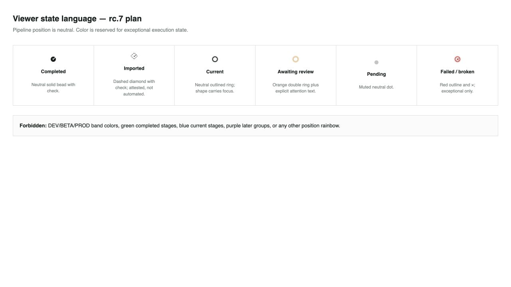
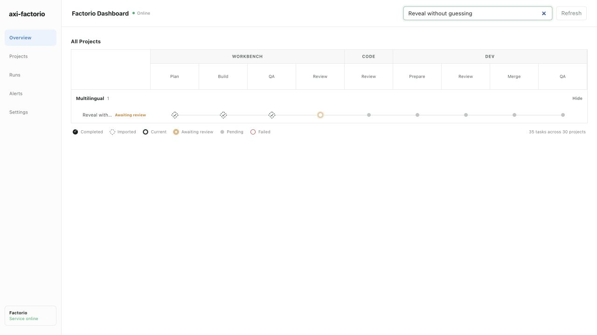

axi-factorio rc.7 viewer semantics
Independent review: passed
Pipeline position is neutral. Imported work uses a dashed checked diamond, human attention uses orange with explicit text, and red is reserved for failure or broken execution.
State plan

Live trial blob
